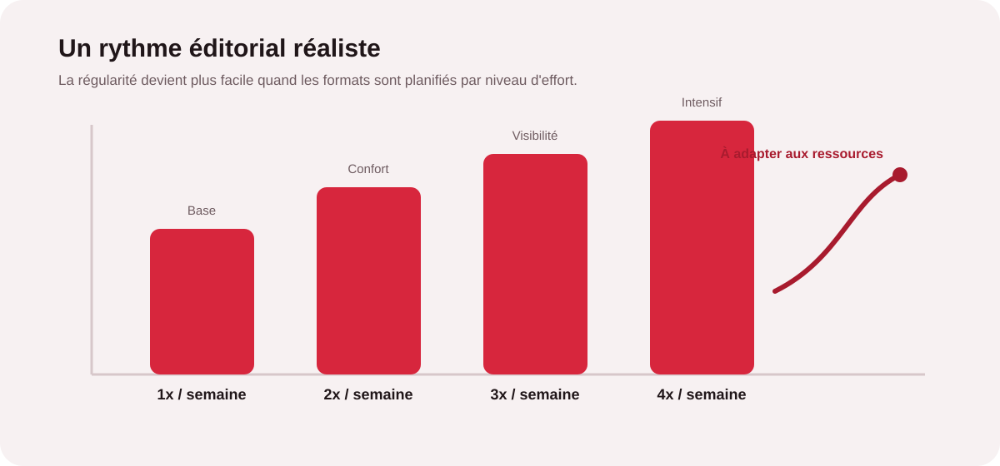
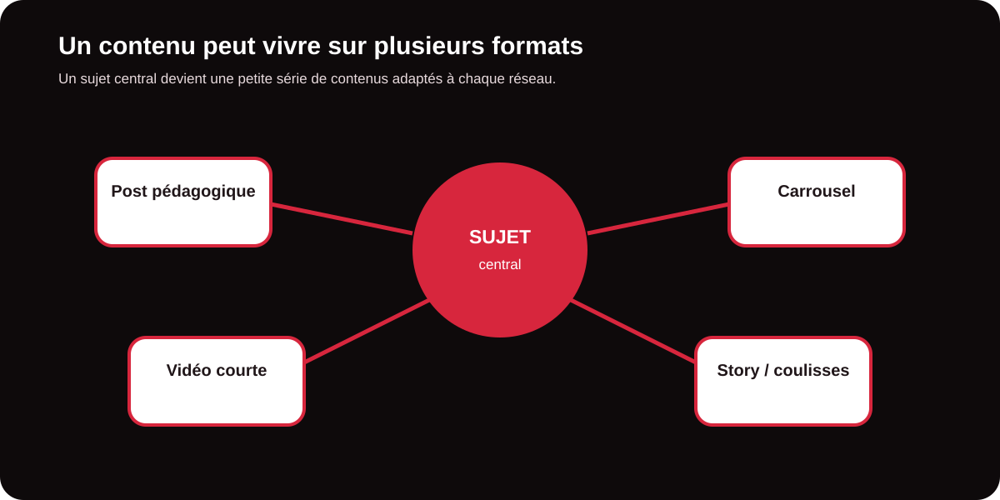
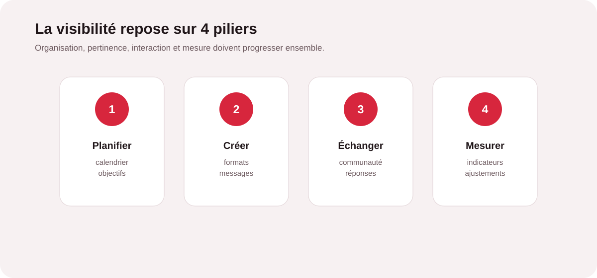

La régularité avant la course à la publication
Le community management ne consiste pas à remplir un calendrier à tout prix. Une marque visible est surtout une marque reconnaissable, active et cohérente. Publier cinq contenus pendant une semaine puis disparaître pendant un mois crée moins de confiance qu’un rythme plus modeste, mais tenu dans la durée.
La première étape consiste donc à définir un niveau de présence compatible avec les ressources disponibles. Une PME peut parfaitement commencer avec deux publications hebdomadaires, quelques stories et une vraie disponibilité pour répondre aux commentaires et messages. L’objectif est de créer une routine durable, pas une surcharge de travail.

1. Définir une stratégie simple avant de créer
Avant de choisir un format, il faut savoir à qui l’on parle, pourquoi et avec quel objectif. Une stratégie sociale efficace peut s’appuyer sur trois priorités : développer la notoriété, créer de la confiance et générer des opportunités commerciales.
Pour chaque cible, identifiez les questions récurrentes, les objections, les sujets d’expertise et les preuves qui rassurent. Cette base permet ensuite de construire des rubriques éditoriales. Par exemple : conseils pratiques, coulisses, expertise, réalisations, témoignages et actualités de l’entreprise.
Une présence régulière commence par une ligne éditoriale claire
MinoSeo peut structurer vos thèmes, vos formats et votre calendrier afin que chaque publication serve un objectif précis.
Structurer ma stratégie sociale2. Construire un calendrier éditorial réaliste
Le calendrier éditorial transforme les idées dispersées en système. Il peut être préparé sur deux à quatre semaines avec, pour chaque publication, une date, un thème, un format, un objectif, un message clé et un appel à l’action éventuel.
Pour éviter l’épuisement, prévoyez des contenus piliers que vous pouvez décliner. Un article, une étude de cas ou une actualité métier peut devenir plusieurs posts, une vidéo courte, un carrousel ou une série de stories. Cette logique réduit le temps de production tout en renforçant la répétition des messages importants.

3. Choisir les bons formats et les bons réseaux
Chaque réseau possède ses usages, ses codes et ses attentes. Il est inutile de reproduire exactement la même publication partout. Instagram se prête bien au visuel, au carrousel et à la vidéo courte ; LinkedIn valorise particulièrement l’expertise, les retours d’expérience et les prises de parole professionnelles ; Facebook reste utile pour l’animation de communauté et la proximité locale ; TikTok et YouTube sont pertinents lorsque la vidéo fait partie de la stratégie.
| Format | Objectif principal | Effort | Bon usage |
|---|---|---|---|
| Post court | Informer ou rappeler une idée | Faible | Conseil, actualité, opinion |
| Carrousel | Faire comprendre un sujet | Moyen | Guide, méthode, checklist |
| Vidéo courte | Attirer l’attention | Moyen à élevé | Démonstration, conseil, coulisses |
| Story | Créer de la proximité | Faible | Actualité, making-of, interaction |
| Témoignage | Rassurer | Moyen | Preuve client, résultat, retour d’expérience |
4. Organiser la production pour gagner du temps
La meilleure organisation consiste à regrouper les tâches. Plutôt que de chercher chaque jour une idée, rédiger, créer le visuel et publier, consacrez un temps à la planification, un temps à la production et un temps au suivi. Cette méthode limite les interruptions et facilite la validation interne.
Un workflow simple peut être : brief mensuel, calendrier validé, production par lots, programmation, modération quotidienne ou régulière, puis bilan mensuel. Les outils de programmation peuvent également centraliser les publications, mais ils ne remplacent pas la lecture des commentaires ni les réponses aux messages.

5. Ne pas oublier la communauté
Une page active ne se résume pas à son nombre de publications. Les réponses aux commentaires, messages privés et réactions participent directement à l’expérience de marque. Une personne qui pose une question doit sentir qu’elle est entendue.
Définissez donc des règles de réponse : ton, délais cibles, questions auxquelles répondre publiquement, situations à basculer en privé et cas nécessitant une validation. Cette organisation est particulièrement importante lorsque plusieurs personnes interviennent sur les comptes.
6. Mesurer ce qui aide réellement à décider
Les indicateurs doivent être reliés aux objectifs. La portée et les impressions renseignent sur la visibilité ; les interactions permettent d’évaluer l’intérêt ; les clics et demandes entrantes rapprochent la mesure des enjeux commerciaux. Pour une vidéo, le taux de visionnage peut être plus instructif que le nombre brut de vues.
Un bon reporting ne cherche pas à présenter tous les chiffres disponibles. Il répond à quelques questions : quels contenus attirent l’attention, lesquels créent de l’engagement, lesquels génèrent une action et que faut-il améliorer le mois suivant ?
Les erreurs qui épuisent les équipes
- Vouloir être présent sur tous les réseaux dès le départ.
- Changer de ligne éditoriale chaque semaine.
- Produire chaque contenu entièrement à partir de zéro.
- Confondre fréquence élevée et qualité de présence.
- Publier sans prévoir de temps pour les interactions.
- Mesurer uniquement les likes sans relier les données aux objectifs.
La méthode MinoSeo : une présence pensée pour durer
Pour une entreprise, externaliser le community management peut permettre de retrouver du temps tout en conservant une communication régulière. L’enjeu n’est pas de déléguer mécaniquement des publications : il s’agit de construire une présence éditoriale cohérente avec la marque, ses objectifs et ses capacités de production.
MinoSeo peut intervenir sur la ligne éditoriale, le calendrier, la rédaction, les formats, la programmation, la modération et le suivi des performances. La méthode privilégie des contenus utiles, une organisation claire et des ajustements fondés sur les résultats observés.
Une présence sociale régulière, sans surcharge
Le community management devient beaucoup plus simple lorsque l’entreprise dispose d’un cadre : quelques thèmes forts, un rythme réaliste, des formats adaptés, un calendrier partagé et des indicateurs utiles. La régularité ne signifie pas publier davantage ; elle signifie être présent de manière suffisamment constante pour construire la confiance.
Avec une méthode structurée, la production de contenus cesse d’être une tâche urgente et devient un véritable levier de visibilité et de relation client.
Envie d'une présence sociale plus régulière ?
MinoSeo vous accompagne dans la stratégie, la création, la programmation et le suivi de vos réseaux sociaux avec une organisation adaptée à votre activité.
Demander un accompagnement